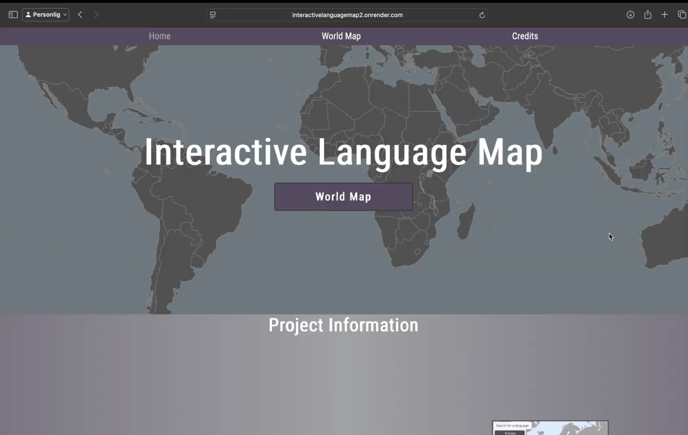
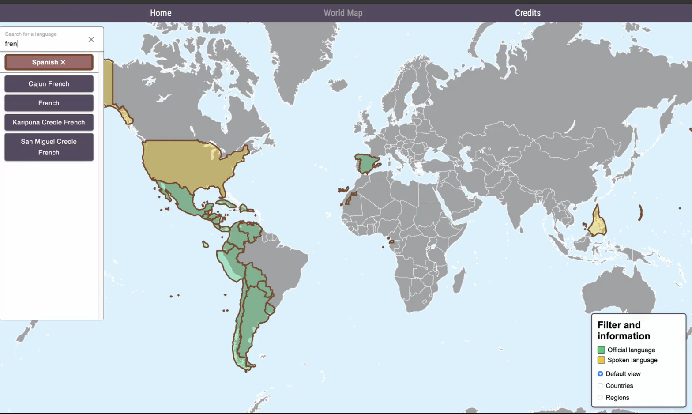
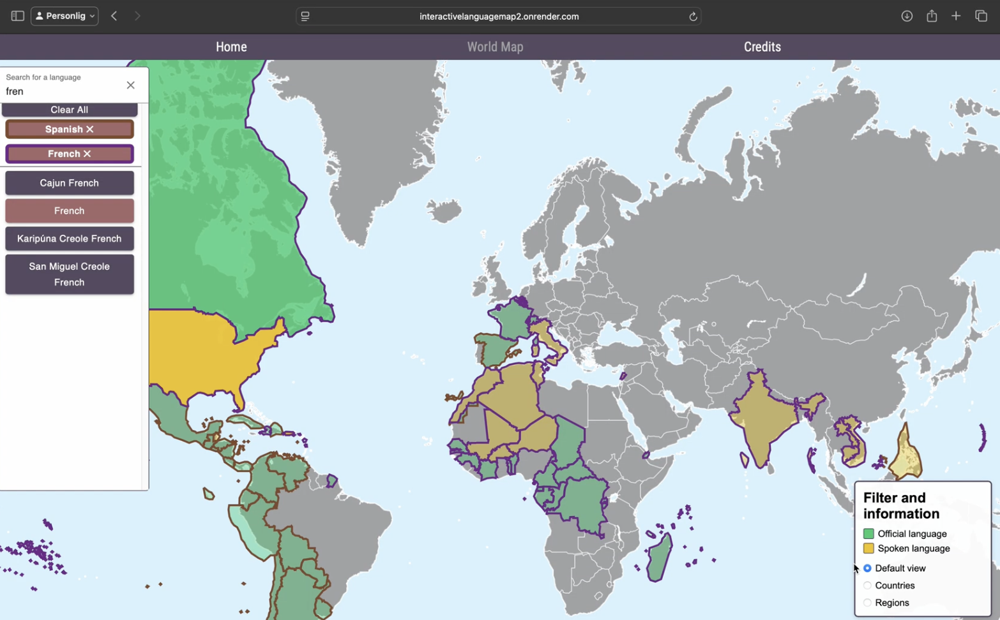

Interactive Map of the World's Languages
My bachelor's thesis in Software Engineering at Chalmers University (did in a group) of Technology, developed as a full-stack web application for exploring the geographical distribution of languages around the world.A full-stack interactive world map developed as a bachelor's thesis project at Chalmers University of Technology.
About the project/thesis
The goal of the project was to create an interactive map that makes it easier to explore the geographical distribution of languages around the world.
Users can search for languages and visualize where they are spoken directly on a world map. The application also provides linguistic information such as language family and number of speakers.
The project combines linguistic information from Wikidata with geographical data from OpenStreetMap.


Exploring languages
Languages can be selected through a searchable list. When a language is selected, the countries and regions where it is spoken are visualized directly on the map.
Multiple languages can be displayed simultaneously using different outline colours, making it possible to compare their geographical distributions.
Users can also interact directly with countries on the map to explore both official and other spoken languages.
System architecture
The application consists of a React and TypeScript frontend, a NestJS backend and a MongoDB Atlas database.
MapLibre is used to render the interactive map. The frontend communicates with the backend to retrieve linguistic and geographical information, which is returned as GeoJSON and displayed on the map.


Collecting the data
Linguistic metadata is collected from Wikidata, including information about language families, number of speakers and where languages are spoken.
Geographical data is retrieved from OpenStreetMap and represented as polygons containing the coordinates required to visualize countries and regions on the map.
The collected data is processed before being stored in MongoDB Atlas and made available to the application.
Frontend
The frontend was developed using React and TypeScript, with MapLibre handling the interactive map and visualization of geographical data.
Backend
The NestJS backend provides endpoints for retrieving languages, geographical information and languages spoken within selected countries.
Source code
The application was originally hosted online during the project, but the deployment is no longer active. The source code is available on GitHub.
View on GitHub →